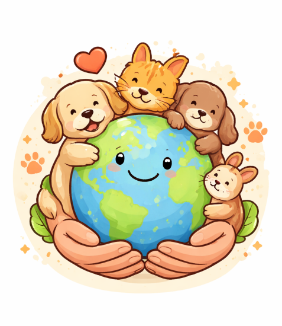
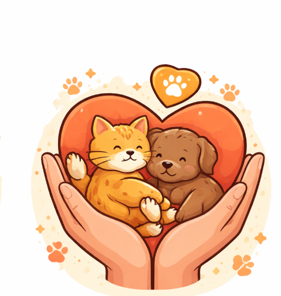

- Este site foi desenvolvido com o objetivo de informar e conscientizar sobre o Abril Laranja, uma campanha dedicada à prevenção dos maus-tratos contra os animais. Ao longo das páginas, foram abordados temas como a importância da conscientização, campanhas, ONGs e leis de proteção animal.
- O trabalho busca mostrar que os animais merecem respeito, cuidado e proteção, além de destacar o papel da sociedade na construção de um ambiente mais justo para todos os seres vivos.
- Também foi possível compreender a importância da informação e da educação na luta contra a violência animal, incentivando atitudes mais responsáveis no dia a dia.
- Assim, este site tem como finalidade contribuir para a formação de uma sociedade mais consciente e empática em relação aos animais.

|
- O Abril Laranja é uma campanha essencial para alertar a população sobre os maus-tratos aos animais e incentivar mudanças de comportamento na sociedade.
- Por meio da conscientização, é possível reduzir casos de abandono e violência, promovendo mais respeito e cuidado com os animais.
- Cada pessoa pode fazer a diferença, seja adotando com responsabilidade, denunciando maus-tratos ou ajudando ONGs que atuam nessa causa.
- Portanto, é fundamental que todos se envolvam na proteção animal, contribuindo para um mundo mais justo, onde os animais sejam tratados com dignidade e carinho.

|